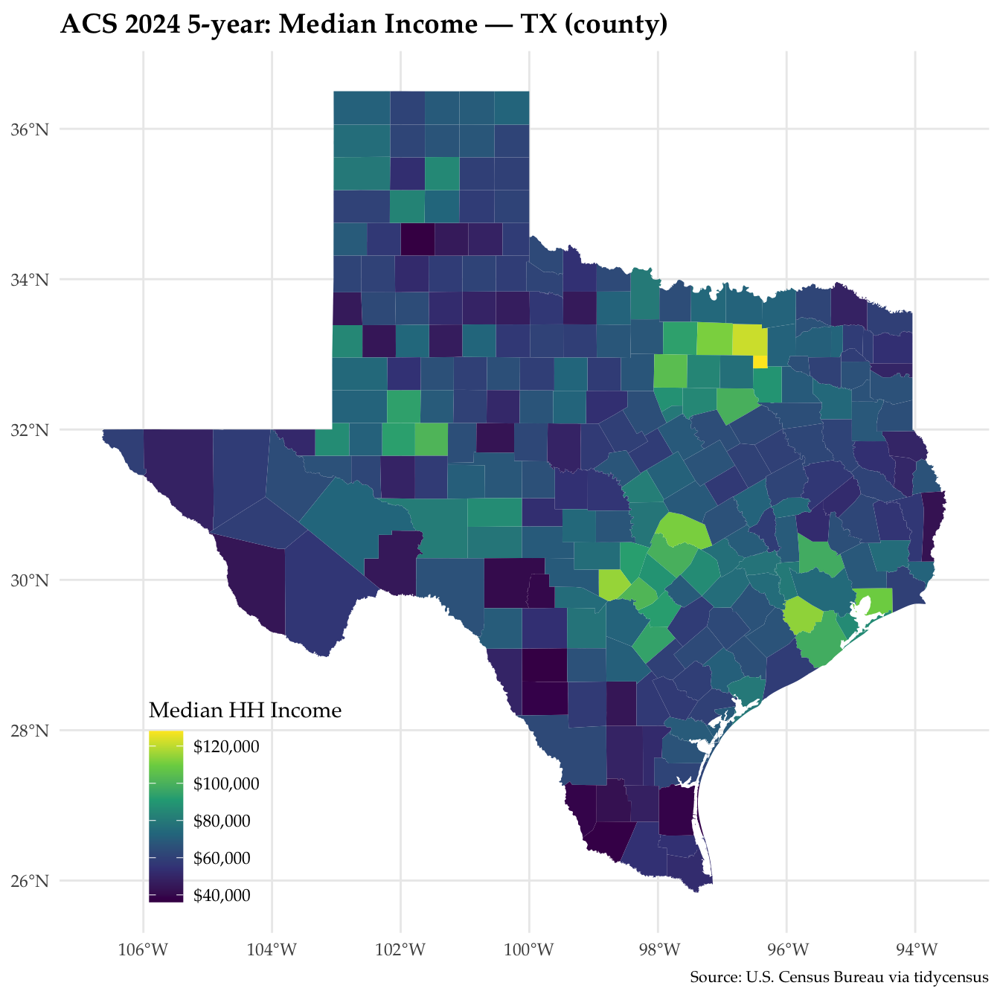

This page uses tidycensus to pull ACS 2024 5-year estimates for every county in Texas. It maps median household income and ranks counties by poverty rate, keeping the margin of error (MOE) next to every estimate in the table.
The four deliverables are labeled below: (a) map, (b) table, (c) uncertainty check and (d) methods note. The code for each step is under “Show code”.
Setup
Show code
# Packageslibrary(tidycensus)library(tigris)library(sf)library(dplyr)library(tidyr)library(ggplot2)library(readr)options(tigris_use_cache =TRUE)# 1) API key — run ONCE in the console, never in this file# census_api_key("YOUR_CENSUS_KEY", install = TRUE)
Variables
Show code
# 2) Explore variables (no `cache` argument — deprecated and ignored)vars <-load_variables(2024, "acs5")vars |> dplyr::filter(grepl("^B19", name)) |> dplyr::slice_head(n =10)
# A tibble: 10 × 4
name label concept geography
<chr> <chr> <chr> <chr>
1 B19001A_001 Estimate!!Total: Household Income … tract
2 B19001A_002 Estimate!!Total:!!Less than $10,000 Household Income … tract
3 B19001A_003 Estimate!!Total:!!$10,000 to $14,999 Household Income … tract
4 B19001A_004 Estimate!!Total:!!$15,000 to $19,999 Household Income … tract
5 B19001A_005 Estimate!!Total:!!$20,000 to $24,999 Household Income … tract
6 B19001A_006 Estimate!!Total:!!$25,000 to $29,999 Household Income … tract
7 B19001A_007 Estimate!!Total:!!$30,000 to $34,999 Household Income … tract
8 B19001A_008 Estimate!!Total:!!$35,000 to $39,999 Household Income … tract
9 B19001A_009 Estimate!!Total:!!$40,000 to $44,999 Household Income … tract
10 B19001A_010 Estimate!!Total:!!$45,000 to $49,999 Household Income … tract
# 4) Download, wide — one row per area, and the sf class survivesacs_wide <-get_acs(geography = geo_level,variables = my_vars,state = state_abbr,year = year_acs,survey = survey,geometry =TRUE,output ="wide")# 5) Derive a rate, and carry its margin of error throughacs_wide <- acs_wide |>mutate(pov_rate = povE / povdenE,pov_moe =moe_prop(povE, povdenE, povM, povdenM))
a. Map
Show code
# 6) Map (edit titles/theme)ggplot(acs_wide) +geom_sf(aes(fill = incomeE), color ="white", linewidth =0.1) +scale_fill_viridis_c(name ="Median household income", labels = scales::label_dollar()) +labs(title ="Median household income by county, Texas",subtitle =paste0("ACS ", year_acs -4, "–", year_acs, " 5-year estimates"),caption ="Source: U.S. Census Bureau via tidycensus") +theme_minimal() +theme(text =element_text(family ="Palatino"), # drop if not installedplot.title =element_text(size =14, face ="bold"),plot.caption =element_text(size =8),panel.grid =element_blank(),axis.text =element_blank(),legend.position ="inside",legend.position.inside =c(0.2, 0.15))

Incomes are highest in the suburban counties around Dallas, Houston, Austin and San Antonio, like Collin, Denton, Fort Bend, Williamson and Kendall. Rockwall County is the highest at $127,981 (± $4,257). They are lowest in South Texas, along and near the border, like Starr, Zapata and Zavala, and in some small rural counties. Swisher County is the lowest at $36,165, but its MOE is ± $14,512. A few small rural counties also show up bright, like Glasscock at $101,250, but with an MOE of ± $53,302. The shading for small counties is much less certain than for the big metro counties.
b. Table
Top and bottom ten counties by poverty rate, with the MOE beside each estimate. ACS MOEs are at the 90% confidence level. The rate MOE is in percentage points and the count MOE is in people.
Dimmit County has the highest poverty rate in the table at 41.1% (± 8.9 points), so its 90% interval runs from 32.2% to 50.0%. Zapata County is second at 38.4% (± 6.0 points), from 32.4% to 44.4%. The two intervals overlap. Overlap is a rough check rather than a formal test, but here the gap between them is small next to both MOEs, so the data can’t tell us which county really has the higher rate. The table puts Dimmit County first, but a different sample could flip that order. The same is true for many other rows, especially small counties with wide MOEs, so the ranking is better read as high and low groups than as an exact order. Loving County is the extreme case: its 6.1% rests on 2 people out of 33, so its place in the table means very little.
d. Methods note
I used counties because they cover all of Texas and most have samples large enough for usable estimates. Tracts would show more detail, but with much larger MOEs. I mapped median household income (B19013_001) and ranked counties by poverty rate: people below poverty (B17001_002) divided by the poverty universe (B17001_001), the people whose poverty status is determined. I used a rate because a count map mostly shows where people live, and I carried the rate’s MOE through with moe_prop() instead of dropping it.
The MOEs here are at the 90% confidence level, and they change how I read the results. Large counties have small MOEs, so their estimates are precise: Collin County is 6.2% ± 0.4 points. Small counties have small samples and wide MOEs: Edwards County is 31.9% ± 23.2 points and Foard County is 5.6% ± 4.4 points. Many counties at the top and bottom of the ranking are small ones like these, so the extremes are where the estimates are least reliable. When two 90% intervals don’t overlap I read the gap as real, and when they overlap I treat the order as uncertain.